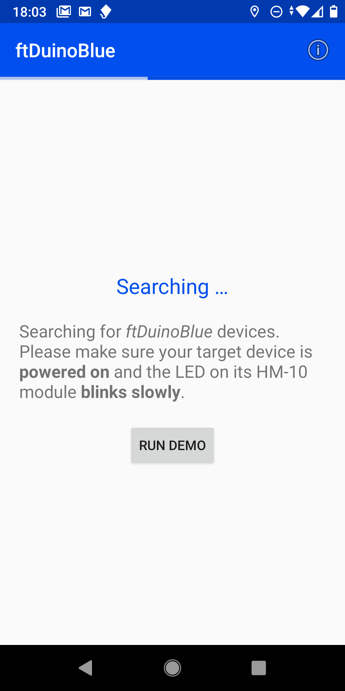
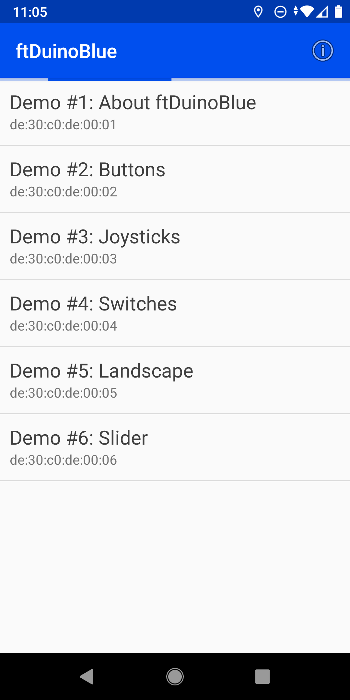

All examples shown on this page are integrated as built-in
demos into the android app. They can be launched without using a
real arduino or ftDuino.


Demo #1: About ftDuinoBlue
This demo is supposed to explain the basic concepts by itself. but it equally well uses the
basic mechanisms itself.
The whole XML description of the user interface consists of the one big layout
element. This includes the different user interface elements. In this case these are mainly
text elements (labels) representing the explanations given to the user. But it also includes
a button as an interactive element.
All elements have to be given an id. The id can be freely choosen. E.g. the button in this
example uses id 4. This id serves two main purposes:
The id is used to reference it in the layout to place other
elements above, below, left of this element. E.g. the label
with id 5 is placed below the button with the id 4 as its
placement includes place='hcenter;below:4'.
The id is used when notfying the arduino of user interaction. E.g.
if the user pressed the button with the id 4 down the app will send
BUTTON 4 DOWN to the arduino to tell it that the
button with the id 4 has been pressed down by the user.
The various values for the place attribute allow for complex relative
layouts as also shown in the other demos.
The possible values to be used inside a place attribute are
listed below. Most values only affect the horizontal or the
vertical placement. Two values can therefore be combined in a
place attribute using a semicolor like
e.g. place='top;hcenter'.
center
Center the element vertically and horizontally on the screen
hcenter
Center the element horizontally on the screen
vcenter
Center the element vertically on the screen
top
Place at the top of the screen
bottom
Place at the bottom of the screen
start
Place at the start of the screen
end
Place at the end of the screen
left
Place at the left screen border
right
place at the right screen border
above:X
Place above the element with id X
below:X
Place below the element with id X
left_of:X
Place left of the element with id X
right_of:X
Place right of the element with id X
start_of:X
Place at start of the element with id X
end_of:X
Place at end of the element with id X
align_top:X
Align this elements top with the top of the element with id X
align_bottom:X
Align this elements bottom with the bottom of the element with id X
align_start:X
Align this elements start with the start of the element with id X
align_end:X
Align this elements end with the end of the element with id X
align_left:X
Align this elements left side with the left side of the element with id X
align_right:X
Align this elements right side with the right side of the element with id X
align_baseline:X
Align this elements text baseline with the text baseline of the element with id X. This makes both texts appear as sitting on the same line.
Various other attributes allow to style the elements by
e.g. changing their size oder color.
<layout orientation='portrait' name='Demo #1: About ftDuinoBlue'>
<label id='1' size='20' place='left;top'>ftDuinoBlue allows you to add a custom remote user interface to any Arduino and ftDuino project. All you need is a HM-10 bluetooth module connected to your Arduino, a few lines of extra code in your sketch, and this app.</label>
<label id='2' size='20' place='left;below:1'>The entire user interface is stored as an XML description inside your Arduino sketch. There is no need to configure anything in this app.</label>
<label id='3' size='20' place='left;below:2'>ftDuinoBlue supports various interface elements like e.g. buttons:</label>
<button id='4' size='30' color='white' bgcolor='#673AB7' place='hcenter;below:3'>Button</button>
<label id='5' size='20' place='left;below:4'>Use the controls in the demo to see what messages would be sent to the Arduino. Hit the button above for a test. Hit the info button in the menu to see the XML code.</label>
</layout>